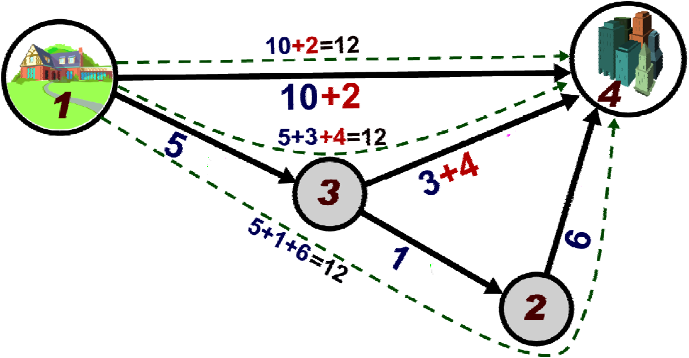

2009 ICPC World Finals · Problem E
Handling traffic congestion is a difficult challenge for young urban planners. Millions of drivers, each with different goals and each making independent choices, combine to form a complex system with sometimes predictable, sometimes chaotic behavior. As a devoted civil servant, you have been tasked with optimizing rush-hour traffic over collections of roads.
All the roads lie between a residential area and a downtown business district. In the morning, each person living in the residential area drives a route to the business district. The morning commuter traffic on any particular road travels in only one direction, and no route has cycles (morning drivers do not backtrack).
Each road takes a certain time to drive, so some routes are faster than others. Drivers are much more likely to choose the faster routes, leading to congestion on those roads. In order to balance the traffic as much as possible, you are to add tolls to some roads so that the perceived “cost” of every route ends up the same. However, to avoid annoying drivers too much, you must not levy a toll on any driver twice, no matter which route he or she takes.
Figure 5 shows a collection of five roads that form routes from the residential area (at intersection 1) to the downtown business district (at intersection 4). The driving cost of each road is written in large blue font. The dotted arrows show the three possible routes from 1 to 4. Initially the costs of the routes are 10, 8 and 12. After adding a toll of cost 2 to the road connecting 1 and 4 and a toll of cost 4 to the road connecting 3 and 4, the cost of each route becomes 12.

You must determine which roads should have tolls and how much each toll should be so that every route from start to finish has the same cost (driving time cost + possible toll) and no route contains more than one toll road. Additionally, the tolls should be chosen so as to minimize the final cost. In some settings, it might be impossible to impose tolls that satisfy the above conditions.
Input consists of several test cases. A test case starts with a line containing an integer N (2 ≤ N ≤ 50000), which is the number of road intersections, and R (1 ≤ R ≤ 50000), which is the number of roads. Each of the next R lines contains three integers xi, yi, and ci (1 ≤ xi, yi ≤ N, 1 ≤ ci ≤ 1000), indicating that morning traffic takes road i from intersection xi to intersection yi with a base driving time cost of ci. Intersection 1 is the starting residential area, and intersection N is the goal business district. Roads are numbered from 1 to R in the given input order. Every intersection is part of a route from 1 to N, and there are no cycles.
The last test case is followed by a line containing two zeros.
For each test case, print one line containing the case number (starting with 1), the number of roads to toll (T), and the final cost of every route. On the next T lines, print the road number i and the positive cost of the toll to apply to that road. If there are multiple minimal cost solutions, any will do. If there are none, print No solution. Follow the format of the sample output.
4 5 1 3 5 3 2 1 2 4 6 1 4 10 3 4 3 3 4 1 2 1 1 2 2 2 3 1 2 3 2 0 0
Case 1: 2 12 4 2 5 4 Case 2: No solution